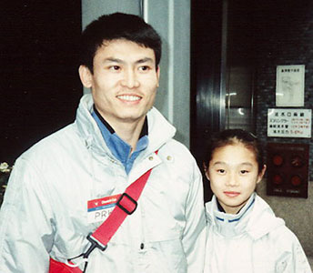

Kim Gwang Suk (PRK)
1991 World UB Champion

Pae Gil Su (left) and Kim Gwang Suk at the 1992 Chunichi Cup.
Medal Total
World Championships: 1 Gold
Kim was born on February 15. She trained at the Pyongyang Municipal Sports Club under coach Kim Chun Phil. North Korean officials falsified Kim's year of birth at several major competitions (she was 15 years old for three years in a row). This led the FIG to ban the North Korean women's team from the 1993 World Championships. It is believed that she was born in 1976.
Competition Results
1987
Jr. Friendship Tournament (Druzhba): 5th Team, 3rd UB, 5th
B
1988
Cottbus International: 17th AA
Jr. Friendship Tournament (Druzhba): 3rd Team, 3rd UB, 5th B
1989
World Championships: 7th Team, 14th AA
1990
Asian Games: 6th AA, 2nd UB
Cottbus International: 13th AA
World Stars: 8th AA, 1st UB
1991
World Championships: 9th Team, 18th AA, 1st UB
1992
Chunichi Cup: 3rd AA, 1st UB
Olympics: 11th Team, 28th AA, 4th UB
Tokyo Cup: 1st UB
1993
East Asian Games: 8th AA, 1st UB
This page was created on March 12, 2000
and was last updated on February 13, 2010.
© Gymn Forum